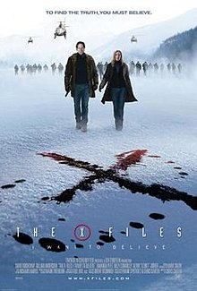

The film takes place between seasons five (episode "The End") and six (episode "The Beginning") of the television series, and is based upon the series' extraterrestrial mythology. The story follows agents Mulder and Scully, removed from their usual jobs on the X-Files, and investigating the bombing of a building and the destruction of criminal evidence. They uncover what appears to be a government conspiracy attempting to hide the truth about an alien colonization of Earth.
